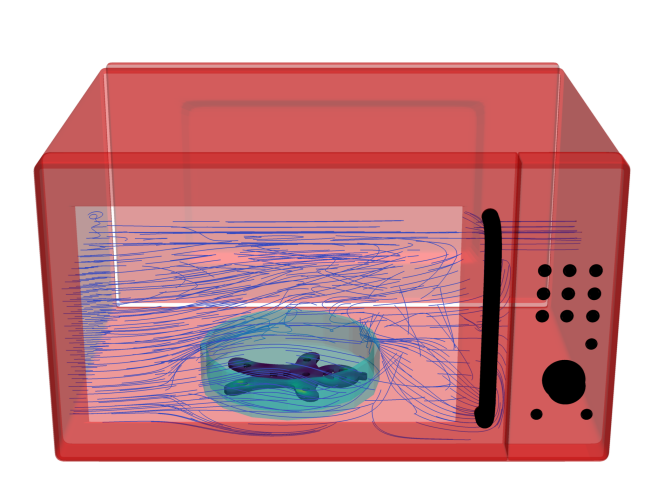
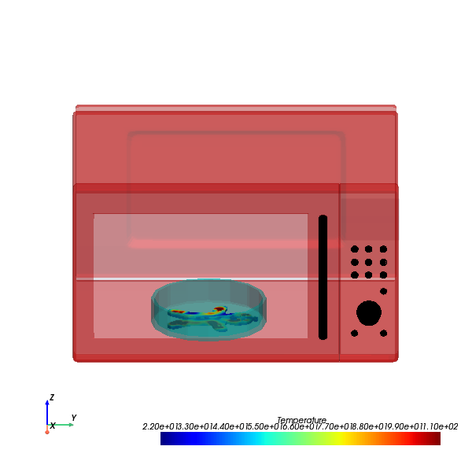

Download this example
Download this example as a Jupyter Notebook or as a Python script.
Multi physics HFSS-Icepak microwave oven simulation#
This example shows how to couple together HFSS and Icepak to run multi physics analysis on a well-know problem of microwave oven.
Keywords: HFSS, modal, microwave oven, Icepak, Multi physics.

Prerequisites#
Perform imports#
[1]:
import ansys.aedt.core
import os
import time
import tempfile
import pyvista
import numpy as np
from ansys.aedt.core import generate_unique_name
from ansys.aedt.core.examples.downloads import download_file
from ansys.aedt.core.visualization.plot.pdf import AnsysReport
Define constants.#
Constants help ensure consistency and avoid repetition throughout the example.
[2]:
AEDT_VERSION = "2025.1"
NUM_CORES = 4
NG_MODE = False # Open AEDT UI when it is launched.
Create temporary directory#
Create a temporary working directory. The name of the working folder is stored in working_dir.name.
[3]:
working_dir = tempfile.TemporaryDirectory(suffix=".ansys")
Download the project#
Download and open the project. Save it to the temporary working folder.
[4]:
parasolid_path = download_file(
source="oven", name="gingerbread.x_t", local_path=working_dir.name
)
oven_path = download_file(
source="oven", name="microwave_oven.aedt", local_path=working_dir.name
)
Launch HFSS#
Open AEDT and initialize the microwave oven project.
After the project is opened, we save it in our working directory.
[5]:
hfss = ansys.aedt.core.Hfss(version=AEDT_VERSION,
project=oven_path,
non_graphical=NG_MODE,
new_desktop=True)
hfss.save_project(file_name=os.path.join(working_dir.name, 'lets_cook.aedt'))
PyAEDT INFO: Parsing C:\Users\ansys\AppData\Local\Temp\tmpv8ml8bl5.ansys\oven\microwave_oven.aedt.
PyAEDT INFO: Python version 3.10.11 (tags/v3.10.11:7d4cc5a, Apr 5 2023, 00:38:17) [MSC v.1929 64 bit (AMD64)].
PyAEDT INFO: PyAEDT version 0.18.dev0.
PyAEDT INFO: Initializing new Desktop session.
PyAEDT INFO: Log on console is enabled.
PyAEDT INFO: Log on file C:\Users\ansys\AppData\Local\Temp\pyaedt_ansys_d9eab5ff-c738-40dc-b60f-c6caa601a59c.log is enabled.
PyAEDT INFO: Log on AEDT is disabled.
PyAEDT INFO: Debug logger is disabled. PyAEDT methods will not be logged.
PyAEDT INFO: Launching PyAEDT with gRPC plugin.
PyAEDT INFO: New AEDT session is starting on gRPC port 63813.
PyAEDT INFO: File C:\Users\ansys\AppData\Local\Temp\tmpv8ml8bl5.ansys\oven\microwave_oven.aedt correctly loaded. Elapsed time: 0m 1sec
PyAEDT INFO: Electronics Desktop started on gRPC port: 63813 after 7.097371816635132 seconds.
PyAEDT INFO: AEDT installation Path C:\Program Files\ANSYS Inc\v251\AnsysEM
PyAEDT INFO: Ansoft.ElectronicsDesktop.2025.1 version started with process ID 3064.
PyAEDT INFO: Project microwave_oven has been opened.
PyAEDT INFO: Active Design set to microwave
PyAEDT INFO: Active Design set to microwave
PyAEDT INFO: Aedt Objects correctly read
PyAEDT INFO: Project lets_cook Saved correctly
[5]:
True
Model Preparation#
Assign material#
This phase is fundamental because we need to assign correct material properties that are valid for both electrical and thermal analysis.
PyAEDT simplifies the creation and modification of a material definitions using getter and setter methods. In this example we modify 5 material parameters.
[6]:
ginger_material = hfss.materials.add_material(name="ginger_bread")
ginger_material.permittivity = 41
ginger_material.dielectric_loss_tangent = 0.32
ginger_material.thermal_conductivity = 0.38
ginger_material.mass_density = 1831
ginger_material.specific_heat = 3520
PyAEDT INFO: Materials class has been initialized! Elapsed time: 0m 0sec
PyAEDT INFO: Adding new material to the Project Library: ginger_bread
PyAEDT INFO: Material has been added in Desktop.
Import the gingerbread man and assign material#
Once the object is imported all of its properties can be edited. We are going to move the gingerbread at the center of the plate and assign material to it.
Finally, we are going to change the transparency of the glass bowl.
[7]:
hfss.modeler.import_3d_cad(input_file=parasolid_path)
ginger_bread = hfss.modeler["plateauPainEpices_Unnamed_5"]
hfss.modeler.move(assignment=ginger_bread, vector=["-0.5in", "-0.2in", "-38.1mm"])
ginger_bread.material_name = ginger_material.name
hfss.modeler["glassBowl"].transparency = 0.75
PyAEDT INFO: Modeler class has been initialized! Elapsed time: 0m 0sec
PyAEDT INFO: Step file C:\Users\ansys\AppData\Local\Temp\tmpv8ml8bl5.ansys\oven\gingerbread.x_t imported
Export an image#
At the end of this example we will generate a PDF report that summarizes the workflow and simulation results.
We now save an image of the model as a PNG file to insert into the report later.
[8]:
hfss.post.export_model_picture(full_name=os.path.join(working_dir.name, 'ginger_bread_cookie.png'))
PyAEDT INFO: Parsing C:/Users/ansys/AppData/Local/Temp/tmpv8ml8bl5.ansys/lets_cook.aedt.
PyAEDT INFO: File C:/Users/ansys/AppData/Local/Temp/tmpv8ml8bl5.ansys/lets_cook.aedt correctly loaded. Elapsed time: 0m 1sec
PyAEDT INFO: aedt file load time 0.8427298069000244
PyAEDT INFO: PostProcessor class has been initialized! Elapsed time: 0m 1sec
PyAEDT INFO: PostProcessor class has been initialized! Elapsed time: 0m 0sec
PyAEDT INFO: Post class has been initialized! Elapsed time: 0m 0sec
[8]:
'C:\\Users\\ansys\\AppData\\Local\\Temp\\tmpv8ml8bl5.ansys\\ginger_bread_cookie.png'
Launch Icepak#
In order to run a multiphysics analysis we need to create an Icepak project that will be retrieve the loss data from HFSS to use as a heat source.
[9]:
ipk = ansys.aedt.core.Icepak(solution_type="Transient Thermal")
ipk.copy_solid_bodies_from(design=hfss, no_vacuum=False, no_pec=False, include_sheets=True)
ipk.modeler["Region"].delete()
ipk.modeler.fit_all()
exc = ipk.assign_em_losses(
design=hfss.design_name,
setup=hfss.setups[0].name,
sweep="LastAdaptive",
map_frequency=hfss.setups[0].props["Frequency"],
surface_objects=[],
assignment=["glassBowl", ginger_bread.name]
)
PyAEDT INFO: Python version 3.10.11 (tags/v3.10.11:7d4cc5a, Apr 5 2023, 00:38:17) [MSC v.1929 64 bit (AMD64)].
PyAEDT INFO: PyAEDT version 0.18.dev0.
PyAEDT INFO: Returning found Desktop session with PID 3064!
PyAEDT INFO: No project is defined. Project lets_cook exists and has been read.
PyAEDT INFO: No consistent unique design is present. Inserting a new design.
PyAEDT INFO: Added design 'Icepak_MQF' of type Icepak.
PyAEDT INFO: Aedt Objects correctly read
PyAEDT INFO: Modeler class has been initialized! Elapsed time: 0m 0sec
PyAEDT INFO: Mapping EM losses.
PyAEDT INFO: Boundary EMLoss EMLoss_8EFKNI has been created.
Thermal boundaries#
Main thermal boundaries will be free opening of the microwave oven.
In this example we set 2 different types of openings on the two faces of the oven.
[10]:
ipk.modeler["ovenCavity"].transparency = 1
ipk.assign_free_opening(assignment=ipk.modeler["ovenCavity"].top_face_y.id,
flow_type="Velocity",
velocity=["0m_per_sec", "-0.5m_per_sec", "0m_per_sec"])
ipk.assign_free_opening(assignment=ipk.modeler["ovenCavity"].bottom_face_y.id,
flow_type="Pressure")
PyAEDT INFO: Boundary Opening Opening_GN8E7W has been created.
PyAEDT INFO: Boundary Opening Opening_OGSK6C has been created.
[10]:
<ansys.aedt.core.modules.boundary.common.BoundaryObject at 0x1f74217afb0>
Icepak multiple reference frame (MRF)#
The MRF assumes mesh rotation as a solid block. In this example is useful to rotate the oven plate and cookie to reduce cooking time.
[11]:
rot_cyl = ipk.modeler.create_cylinder(orientation="Z",
origin=[158.75, 228.6, 0],
radius=110, height=150,
material="air",
name="rotating_cylinder")
rot_cyl.display_wireframe = True
rot_cyl.transparency = 1
block = ipk.assign_solid_block(rot_cyl.name, 0)
block.props["Use MRF"] = True
block.props["MRF"] = "6rpm"
block.props["Is Cylinder MRF"] = True
PyAEDT INFO: Materials class has been initialized! Elapsed time: 0m 0sec
PyAEDT INFO: Boundary Block Block_GQQD14 has been created.
Icepak mesh settings#
Icepak mesh settings are used to optimize the simulation time and accuracy.
[12]:
ipk.mesh.global_mesh_region.manual_settings = True
ipk.mesh.global_mesh_region.settings["MaxElementSizeX"] = "15mm"
ipk.mesh.global_mesh_region.settings["MaxElementSizeY"] = "15mm"
ipk.mesh.global_mesh_region.settings["MaxElementSizeZ"] = "15mm"
ipk.mesh.global_mesh_region.settings["BufferLayers"] = '2'
ipk.mesh.global_mesh_region.settings["MaxLevels"] = '2'
ipk.mesh.global_mesh_region.update()
PyAEDT WARNING: No mesh operation found.
PyAEDT WARNING: No mesh region found.
PyAEDT INFO: Mesh class has been initialized! Elapsed time: 0m 0sec
[12]:
True
Icepak solution setup#
In this example we are limiting the number of steps to a maximum of 5 steps to make the example quick to run. Ideally this number has to be increased to improve the simulation accuracy and obtain more precise results.
[13]:
setup = ipk.create_setup()
setup.props["SaveFieldsType"] = "Every N Steps"
setup.props["N Steps"] = "5"
setup.props["Turbulent Model Eqn"] = "kOmegaSST"
setup.props["Flow Regime"] = "Turbulent"
solved = False
stop_time = 0
Icepak report preparation#
[14]:
ipk.save_project()
ginger_bread_thermal = ipk.modeler["plateauPainEpices_Unnamed_5"]
ginger_bread_thermal.transparency = 1
objects = ipk.modeler.non_model_objects[::] + ["glassBowl"]
microwave_objects = ipk.post.export_model_obj(objects, export_as_multiple_objects=True, )
PyAEDT INFO: Project lets_cook Saved correctly
PyAEDT INFO: Parsing C:/Users/ansys/AppData/Local/Temp/tmpv8ml8bl5.ansys/lets_cook.aedt.
PyAEDT INFO: File C:/Users/ansys/AppData/Local/Temp/tmpv8ml8bl5.ansys/lets_cook.aedt correctly loaded. Elapsed time: 0m 2sec
PyAEDT INFO: aedt file load time 1.7342255115509033
PyAEDT INFO: PostProcessor class has been initialized! Elapsed time: 0m 2sec
PyAEDT INFO: Post class has been initialized! Elapsed time: 0m 2sec
Initialize Ansys report#
AnsysReport PyAEDT class that allows creation of simple and effective PDF reports that include text, images, tables and charts.
[15]:
report = AnsysReport(
version=ipk.aedt_version_id, design_name=ipk.design_name, project_name=ipk.project_name
)
report.create()
report.add_section()
report.add_chapter(f"Ansys GingerBread Recipe")
report.add_sub_chapter("Ingredients")
report.add_text("Step 1: Melt the sugar, golden syrup and butter in a saucepan, then bubble for 1-2 mins.")
report.add_text("Leave to cool for about 10 mins.")
report.add_text("Step 2: Tip the flour, baking soda and spices into a large bowl.")
report.add_text(
"Add the warm syrup mixture and the egg, stir everything together, then gently knead in the bowl until smooth and streak-free.")
report.add_text("The dough will firm up once cooled. Wrap in cling film and chill for at least 30 mins.")
report.add_text("Step 3: Remove the dough from the fridge, leave at room temperature until softened. ")
report.add_text("Set the microwave oven power to 1200W but be careful about the time!!!")
report.add_page_break()
report.add_sub_chapter("Design the Microwave Oven... with HFSS")
report.add_text("An accurate Microwave Oven design requires:")
report.add_text("1- Ansys HFSS")
report.add_text("2- PyAEDT")
report.add_image(path=os.path.join(working_dir.name, 'ginger_bread_cookie.png'),
caption="HFSS Design of Ansys Microwave Oven")
report.add_page_break()
report.add_sub_chapter("Determine cooking time... with Icepak")
report.add_text("")
report.add_text("")
report.add_text("A complete Icepak project requires:")
report.add_text("1- Correct material assignment")
report.add_text("2- Rotating gingerbread")
report.add_text("3- Convection settings")
report.add_text("4- Accurate EM Losses from HFSS")
report.add_page_break()
report.add_sub_chapter("Recipe experiments")
[15]:
True
Method to generate temperature plot on gingerbread#
This method encapsulates a set of actions to plot and arrange the view of the gingerbread inside the microwave oven. The view is set to front \((y-z)\).
[18]:
def generate_temps(stop):
pl = ipk.post.plot_field(
quantity="Temperature",
assignment=ginger_bread_thermal.faces,
plot_cad_objs=True,
show=False,
intrinsics={"Time": f"{stop}s"},
scale_min=22,
scale_max=110,
show_legend=False,
dark_mode=False,
)
for mw_obj in microwave_objects:
pl.add_object(mw_obj[0], mw_obj[1], mw_obj[2])
pl.camera_position = 'yz'
pl.elevation_angle = 20
pl.plot(export_image_path=os.path.join(working_dir.name, f'{generate_unique_name("Temperature")}.jpg'),
show=False)
return pl
Cook the gingerbread#
Loop to determine transient time#
This is the core of our optimization process. We increase the Icepak stop time by steps of 5 seconds until the mean temperature of the gingerbread reaches the 50 degrees. We could also have used an optimizer (Optislang) or run a longer time and plot the average temperature over time.
[19]:
while not solved:
stop_time = stop_time + 5
setup.props["Stop Time"] = f"{stop_time}s"
setup.analyze(cores=4, tasks=4)
mean_temperature = get_average_temperature()
if mean_temperature > 50:
solved = True
report.add_page_break()
report.add_sub_chapter(f"The Gingerbread is ready!!!!")
report.add_text(f"The perfect time for cooking the Gingerbread is {stop_time}s")
plot4 = generate_temps(stop_time)
report.add_image(plot4.image_file, f"GingerBread at the end of cooking.")
else:
ipk.logger.info(
f'Mean Temperature in the Gingerbread is {mean_temperature} after {stop_time}s in the microwave')
if mean_temperature > 30:
report.add_text(f"Gingerbread is almost ready. Don't worry we will notify you when ready.")
output_file = generate_streamline(stop_time)
report.add_image(os.path.join(working_dir.name, "streamlines.png"),
f"GingerBread while cooking after {stop_time}s")
else:
report.add_text(f"Take a cup of tea and relax. It will take longer.")
ipk.save_project()
PyAEDT INFO: Key Desktop/ActiveDSOConfigurations/Icepak correctly changed.
PyAEDT INFO: Solving design setup Setup
PyAEDT INFO: Key Desktop/ActiveDSOConfigurations/Icepak correctly changed.
PyAEDT INFO: Design setup Setup solved correctly in 0.0h 5.0m 25.0s
PyAEDT INFO: Mean Temperature in the Gingerbread is 31.6139 after 5s in the microwave
PyAEDT INFO: Active Design set to Icepak_MQF
PyAEDT INFO: Active Design set to Icepak_MQF
PyAEDT INFO: Active Design set to Icepak_MQF
PyAEDT INFO: Active Design set to Icepak_MQF
PyAEDT INFO: Active Design set to Icepak_MQF
PyAEDT INFO: Project lets_cook Saved correctly
PyAEDT INFO: Key Desktop/ActiveDSOConfigurations/Icepak correctly changed.
PyAEDT INFO: Solving design setup Setup
PyAEDT INFO: Key Desktop/ActiveDSOConfigurations/Icepak correctly changed.
PyAEDT INFO: Design setup Setup solved correctly in 0.0h 2.0m 28.0s
PyAEDT INFO: Mean Temperature in the Gingerbread is 43.3938 after 10s in the microwave
PyAEDT INFO: Active Design set to Icepak_MQF
PyAEDT INFO: Active Design set to Icepak_MQF
PyAEDT INFO: Active Design set to Icepak_MQF
PyAEDT INFO: Active Design set to Icepak_MQF
PyAEDT INFO: Active Design set to Icepak_MQF
PyAEDT INFO: Project lets_cook Saved correctly
PyAEDT INFO: Key Desktop/ActiveDSOConfigurations/Icepak correctly changed.
PyAEDT INFO: Solving design setup Setup
PyAEDT INFO: Key Desktop/ActiveDSOConfigurations/Icepak correctly changed.
PyAEDT INFO: Design setup Setup solved correctly in 0.0h 2.0m 24.0s
PyAEDT INFO: Active Design set to Icepak_MQF
C:\actions-runner\_work\pyaedt-examples\pyaedt-examples\.venv\lib\site-packages\pyvista\jupyter\notebook.py:37: UserWarning: Failed to use notebook backend:
Please install `ipywidgets`.
Falling back to a static output.
warnings.warn(

Generate PDF#
[20]:
report.add_toc()
report.save_pdf(working_dir.name, "Gingerbread_ansys_recipe.pdf")
[20]:
'C:\\Users\\ansys\\AppData\\Local\\Temp\\tmpv8ml8bl5.ansys\\Gingerbread_ansys_recipe.pdf'
Release AEDT#
Release AEDT and close the example.
[21]:
ipk.save_project()
ipk.release_desktop()
# Wait 3 seconds to allow AEDT to shut down before cleaning the temporary directory.
time.sleep(3)
PyAEDT INFO: Project lets_cook Saved correctly
PyAEDT INFO: Desktop has been released and closed.
Clean up#
All project files are saved in the folder temp_folder.name. If you’ve run this example as a Jupyter notebook, you can retrieve those project files. The following cell removes all temporary files, including the project folder.
[22]:
working_dir.cleanup()
Download this example
Download this example as a Jupyter Notebook or as a Python script.